Analyzing lead levels in Minneapolis/Saint Paul area through spatial correlation!
When raising a child, parents go through lots of stress to keep their children safe and healthy. From using car seats to getting children vaccinated to working on speech and mobility development and beyond, there is a lot to think about. But one aspect that may be overlooked in providing safe and healthy environment for a child is lead. Lead in paint, soil, air, or water is invisible to the naked eye and has no smell (“Prevent Children’s Exposure to Lead” 2021). However, children can be exposed to lead in a variety of manners, including swallowing house dust or soil contaminated by lead paint or drinking water delivered through lead-based pipes, faucets, and plumbing fixtures. Exposure to this hidden element can seriously harm a child’s health, including damage to the child’s brain and nervous system, slowed growth and development, as well as learning, hearing, speech, and behavior problems (“Prevent Children’s Exposure to Lead” 2021). If exposed to especially high levels of lead, children can face a brain condition known as encephalopathy, severe neurological damage, comas, and even death (“Annual Elevated Blood Lead Levels” 2020). Thus, without a question it is crucial to keep lead exposure to a minimum when raising a child.
In this project, we analyzed elevated blood lead levels in the 7 county Twin Cities metropolitan area using public data provided by the Minnesota Department of Health over the period of 2015-2019 (Health, n.d.). To protect the privacy of individuals, the smallest granularity we were able to obtain this data was on the census tract level, meaning for each of the 691 census tracts in the Twin Cities metropolitan area we obtained information on how many children were tested and how many of those tests resulted in elevated blood lead levels. To have elevated blood lead levels (EBLLs) means that a child has a confirmed result at or above 5 micrograms of lead per deciliter of blood (mcg/dL) (“Annual Elevated Blood Lead Levels” 2020). Children under 6 years of age are tested. The Minnesota Department of Health identifies children living in the Minneapolis and Saint Paul city limits as children at a higher risk for lead exposure and recommends these children to receive blood lead testing at 1 and 2 years of age. This recommendation is warranted given that in 2019, between 1-2% of children in Minneapolis or St. Paul had EBLLs, which is double the statewide average and higher than any other region of Minnesota (“Annual Elevated Blood Lead Levels” 2020). Interestingly, the MDH has found children living in the Metro area but not living in the cities of Minneapolis or St. Paul are at a lower risk of lead exposure than the Greater Minnesota (non-Metro) are. Only about 0.3% of these children have elevated blood lead levels whereas about 0.8% of children living in MN outside the metro area have elevated blood lead levels. As a result, to best explore this contrast between Minneapolis-Saint Paul and the suburban region, this project will solely focus on EBLL data from the 7 county Twin Cities metro area. This region is shown in navy on the road map of Minnesota below.
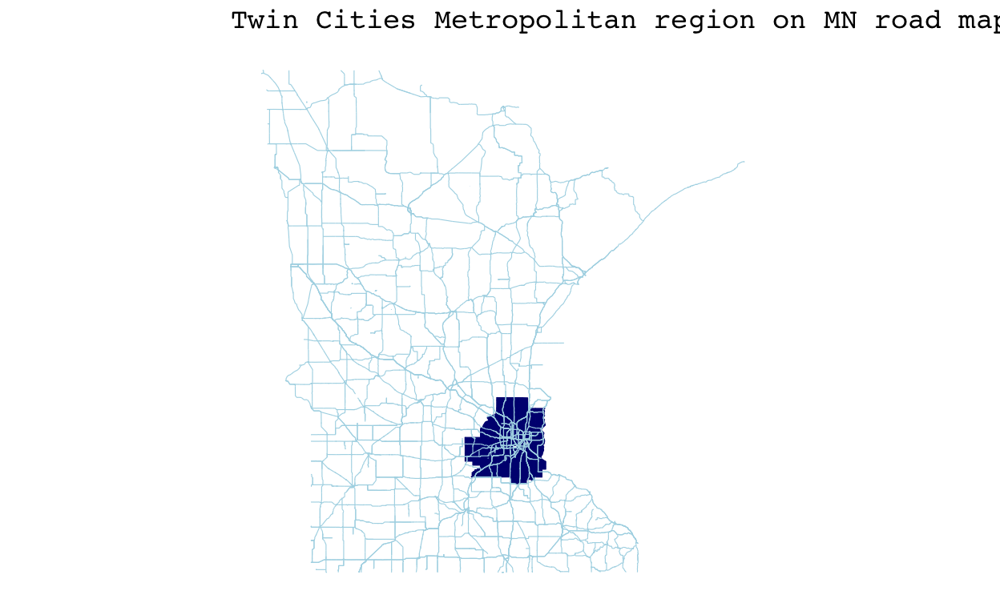
Keeping the health consequences of lead exposure to children in the front of our minds, our research focuses on investigating what is correlated with a census tract having a noticeably high proportion of children testing with elevated blood lead levels. We defined a tract to be a “high lead tract” if at least 1% of the tests in the tract resulted in elevated blood lead levels (meaning 5+ mcg lead/dL). This left us with 106 “high lead” tracts and 585 “safe” tracts. The location of these “high lead” tracts in the Twin Cities metropolitan area can be seen below in red. It is clear that the majority of them fall in the Minneapolis-Saint Paul city limits.
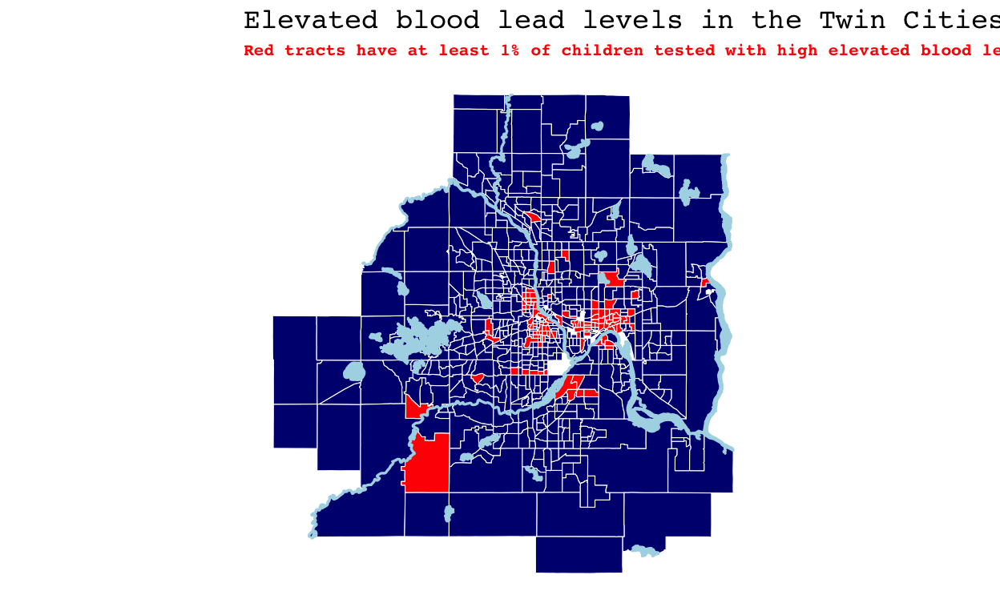
The reason why this research question is important is because understanding what is correlated with tracts having high lead levels can help the Minnesota Department of Health, organizations, and families protect children from lead exposure. For example, it wouldn’t be unreasonable to expect tracts with older homes to have higher lead levels, as these homes are more likely to have been built when science did not know the harms of lead pipes and paint. On March 28, 2022, Saint Paul Mayor Melvin Carter announced a $14.5 million American Rescue Plan investment to remove thousands of lead pipes across the city (n.d.). If home age appears a strong indicator of high lead levels, identifying tracts with old homes, high lead levels, and lots of young children can alert the city to replace their pipes first. In our research we also might search for a relationship between testing, income, and lead levels. If we are to find certain income groups getting tested more or less than others holding other variables constant, we can shed light on that and advocate for resources to get specific tracts the testing they need and deserve given their exposure.
To help us understand what is correlated with a tract being “high lead”, we will need more than just the information provided by the MDH of tract lead levels. Using the tidycensus (Walker and Herman 2022) package in R, we can access a plethora of information on each census tract including its estimated mean age, mean income, population, proportion of family households, home age, and so much more. We begin by exploring the relationship between many of these variables and testing as well as EBLLs.
One of the first variables we decided to explore was estimated home age. Using the tidycensus package, we were able to access the number of residences in each census tract built prior to 1950, between 1950-1959, 1960-1969, etc. We made these variables proportions by dividing the number of homes built in each time period by the total number of homes in the census tract. Most revealing was the proportion of homes built prior to 1950 - as seen in the map below, the Minneapolis-Saint Paul city limits are largely composed of these older homes while the tracts on the outskirts of the city have few very homes built before 1950.
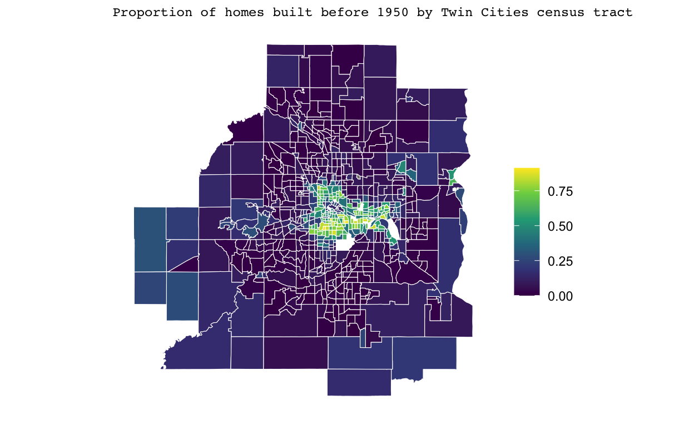
Given this visualization and our knowledge of history, it is clear that home age likely plays a strong role in lead exposure in children. But it can’t be the only factor. In the map below, we again identify tracts with at least 1% of tests registering with elevated blood lead levels. These tracts are colored red and pink, though in the pink tracts less than 25% of homes were built before 1950. We see these pink tracts generally are located outside the MSP city limits in more recently developed suburban areas.
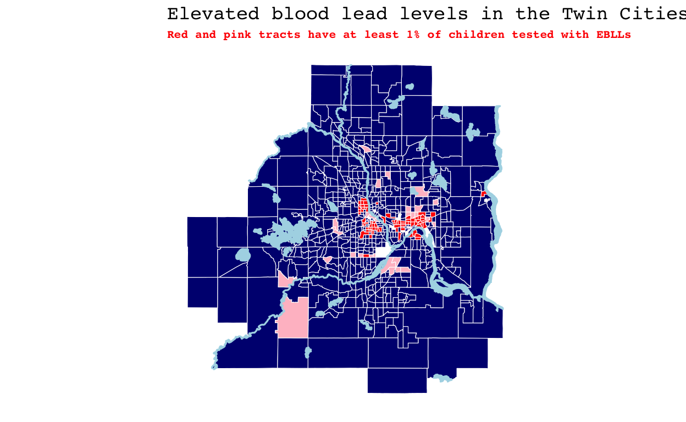
Comparing these pink tracts we have denoted as “high lead” tracts that contain less than 25% of homes built before 1950 to tracts we have denoted as having safe lead levels, there are a few things to notice. Our first thought was that perhaps these pink tracts were still significantly older than the safe lead level tracks and were just built largely in the 1960s and 70s. Lead-based paint and lead-contaminated dust are the most common sources of lead poisoning, and paint containing lead was not banned in the United States until 1978 (“Common Sources of Lead Poisoning,” n.d.). Therefore, any home built prior to 1978 could certainly serve as an exposure threat to children. It ended up that on average 56.1% percent of the homes in the pink tracts were built before 1979 compared to 54.8% of homes in the safe lead tracts. With such a small difference, there has to be something else correlated with a higher proportion of tests with EBLLs in particular tracts. Looking into other variables, we found the pink high lead tracts have a slightly higher population density at about 2 people/1000 \(\text{m}^2\) than the safe lead tracts at 1.4 people/1000 \(\text{m}^2\). Additionally, these pink high lead tracts have an estimated median income of $63,431, whereas the safe lead tracts have an estimated median income of almost $87,661. Lead exposure can also come through occupation (people exposed to lead through jobs in fields such as auto repair, mining, pipe fitting, battery manufacturing, painting, and construction can bring it home on their clothing), soil, pottery, herbal and folk remedies, the ingredient tamarind in candy, and cosmetics (“Lead Poisoning” 2022). Given the significant difference in median income between the pink high lead tracts and the safe lead tracts, it is possible that residents from the pink high lead tracts live a different lifestyle than residents in the safe lead tracts that causes them to be exposed to lead at a higher rate. Exactly how this lead exposure is happening is a mystery that we cannot currently solve given the data we have, but the identification of these somewhat unexpected “high lead” tracts is crucial as it can help direct resources and information toward these tracts in order to reduce lead exposure.
A large factor of obtaining high lead percentages is related to how often an area is tested. As more tests are issued, it is more likely we will observe a high lead percentage since the census tract is taking precautions and responding to factors that already cause EBLLs. It is interesting that there is a population within “high lead” census tracts of tracts with newer homes that aren’t getting tested at a high rate. We defined a “high rate” of testing to be when the number of tests in the tract is less than the estimated number of children who are 0 to 5 age. These specific census tracts are shown in yellow on the map below and seem to be located outside of the cities. We are unsure exactly why this is, but perhaps it is a result of poor news and communication in terms of safely precautions for high lead levels.
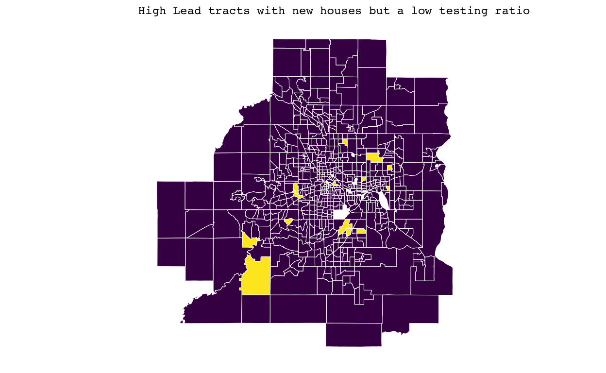
Doing some further investigation using our binary variables indicative of high lead and high testing as well as an estimated tract home age variable, we note some interesting patterns. As we noted with the map above, there are several tracts with on average newer homes that have over 1% of tests with EBLLs but are not getting tested at a high rate. Again, this may be the result of ignorance or delayed news. Additionally, among the census tracts that have a high testing ratio, tracts denoted as “high lead” tend to have a significantly higher estimated home age, which is intuitive as older homes tend to have lead pipes. Furthermore, looking at the relationship between estimated tract median income and testing, we see higher income census tracts are getting tested less compared to lower income census tracts. This is intuitive as lower income census tracts may be more risk in terms of living in older houses and thus face higher lead exposure.
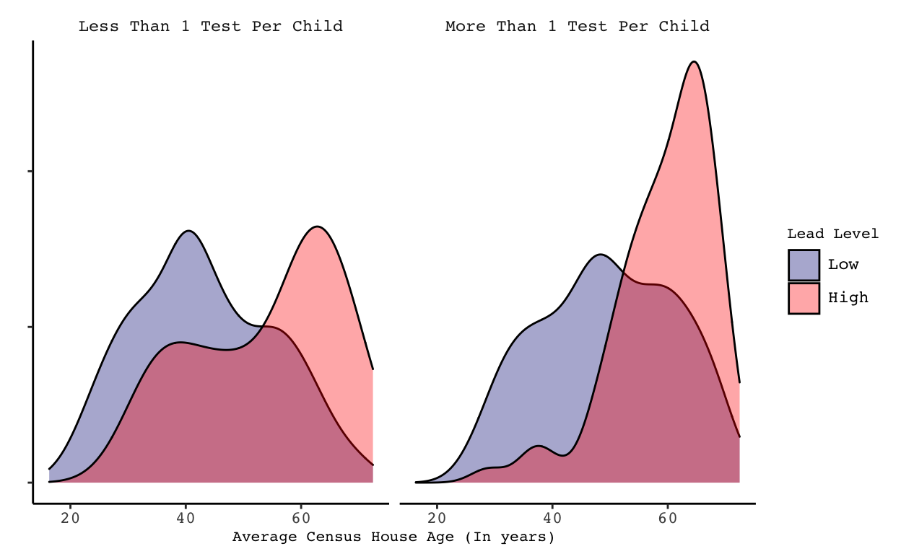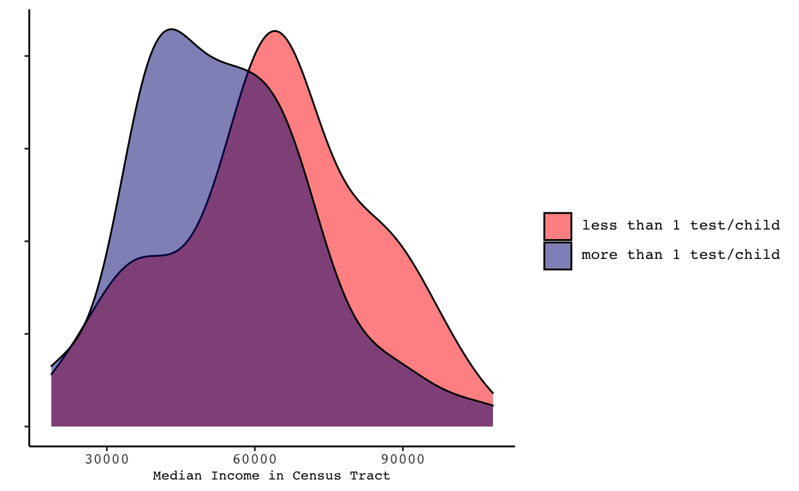
In the upcoming section, we will be modeling the binary outcome of whether a census tract is considered to be “high lead” or not. As a reminder, we denoted a tract as “high lead” if over 1% of tests contained elevated blood lead levels. The majority of these tracts are located in the Twin Cities.
We use LASSO logistic regression to distinguish important variables in predicting census tracts with high lead concentrations. After tuning for the best penalty, we discovered that income, proportions of homes built before 1950, testing ratio (number of tests/child aged 0 to 5), number of tests total, and median age of the census tract are important variables in modeling the variance of high lead levels. However, it is difficult to account for spatial correlation using LASSO, so we will not be interpreting the output and standard errors. Instead, we will take the important variables LASSO identified and fit a random effect model. The one exception to this is we will drop variable indicating the total number of tests and soley use testing ratio, as it is better indicative of whether the number of tests a tract receives is appropriate for their population. This random effect model will account for spatial correlation. Spatial correlation is very important in our study as census tracts that are close together will share many similar characteristics in regards to income, community, and more. Leaving this unaccounted for will result in correlated residuals.
Essentially, a Matern random effects model takes into account the correlation between points via the euclidean distance between coordinates. Our random effect model accounts for spatial correlation by incorporating the X and Y coordinates of the centroid, or center, of each census tract. We are able to do so by creating a numeric factor representing the coordinates of sampled locations. We fit a constant nu (smoothness parameter) for easier computational purposes. We use a nu value of 0.5, which means the Matern correlation is equivalent to spatial exponential decay. Because we have the matern correlation coefficient, we do assume isotropic, meaning that the covariance function depends only on the computational distance.
We use this model as it is an alternative way to account for spatial correlation, by imposing a correlation structure on the random effect so that each census tract are spatially correlated. In absence of the random effect, neighboring census tracts will have spatially correlated residuals. When two regions are farther away, we expect the correlation between them to get lower. Rho is a measure of range correlation, therefore a higher value of rho implies more spatial correlation being captured by the model.
We fit two different models, one with our designated important variables from LASSO and another with an interaction between the proportion of homes built before 1950 and a categorical income variable. This interaction suggests that income plays a different role among high lead levels conditioned on proportion of hold homes. Perhaps if we are at a high income level and have high proportion of old homes, we may see reduced probability of high lead levels due to the ability to renovate.
Now that we have our two models, we can evaluate them. We decided to use a threshold of 70% to predict if a census tract is to be considered in the high lead category or not. This means that if the logistic regression gives us a predicted probability of .70 or higher, we will make a hard prediction that the census area is high lead. We chose a threshold of .70 as it is gives us the best sensitivity. In the context of EBLL, a threshold of 0.70 gives us the most accuracy in correctly determining a census tract with high lead levels.
The signs of all coefficients make sense. As income increases, the odds ratio decreases by 0.852 for every 1000 dollar increase in median income holding other variables constant. This is in check with our understanding as the more income a household has, the more likely they will be able to remodel and replace lead pipes. Additionally, the more income a census tract has, the more newer houses we may see. The proportion of homes built before 1950 is the most statistically significant coefficient. As per the first model, a percentage increase in a proportion of homes built before 1950 will increase odds ratio of a tract being high lead by 1.25 holding other variables constant. Finally, the coefficient on the test ratio variable is also positive, indicating an increase in odds of a census tract being high lead as their test ratio increases. This is intuitive as tracts that are testing more are likely doing so because they face higher exposure.
Our interaction terms in the second model were all non-significant. Meaning, under the model, category of income did not impact high lead differently despite being conditioned on the proportion of houses built before 1950. Although all statistically insignificant, income classes that suffered the most from greater houses built before 1950 were the census tracts with lowest median income.
Why does our prediction have 100% accuracy? Spatial random effect will help improve the prediction because it is using neighboring information to account for that spatial correlation, doing so more in the mean structure and actually change the prediction, conditioned on random effects and getting more precise and improved conditions, rather than marginal mean prediction. Hence why we have a 100% prediction accuracy for both models, because of the random effect that is able to capture variations that are unobservant.
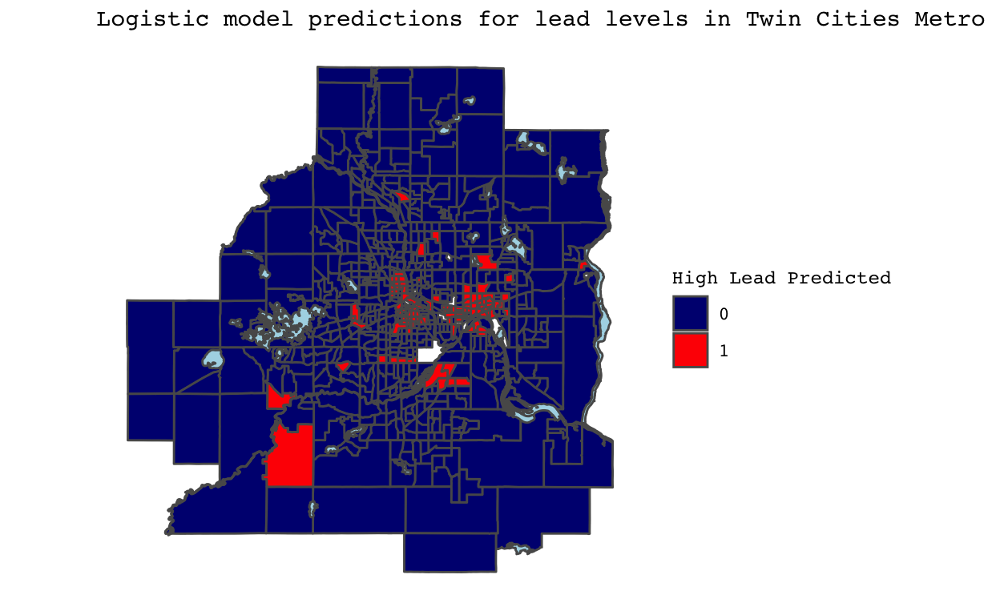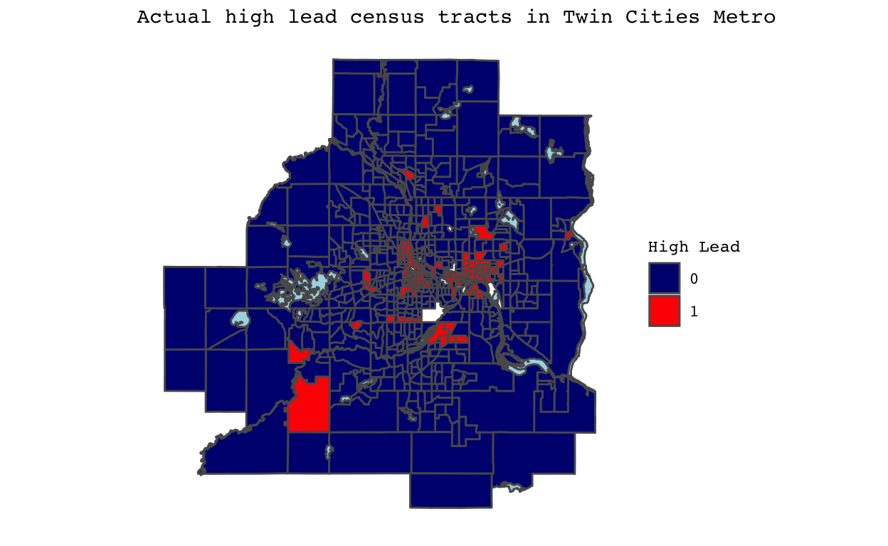
Thus far, we have developed a model to predict whether or not a census tract will have at least 1% of tests return with an indication of EBLLs. But its important to acknowledge that not all census tracts that we have denoted as “high lead” have the same proportion of tests indicating EBLLs. For the 106 “high lead” tracts, the distribution of the proportion of tests indicating EBLLs is shown below.
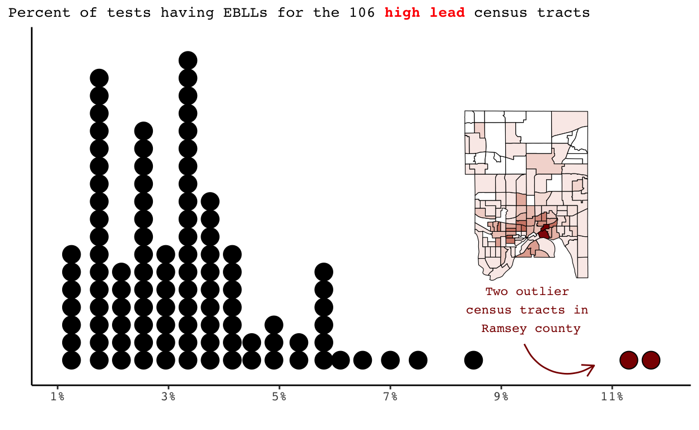
In order to better understand this distribution and what is correlated with certain tracts having a higher percentage of tests with EBLLs than others, we will build a model for this percentage using solely the 106 “high lead” tracts. Similar to our logistic model building process to predict whether or not a tract is “high lead”, we will begin with a LASSO regression model. Variables that remain in the model after the shrinkage process can be thought of as most important at helping us identify why certain tracts have a higher percentage of tests with EBLLs than others.
Using 10-fold cross validation on our 106 census tracts, the LASSO modeling process identified tract population, the proportion of homes built between 1950 and 1969, the proportion of homes built before 1950, and the estimated mean receipt of supplemental security income (SSI) for households with children under 18 as the most important predictors of percentage of tests with EBLLs. Interestingly, population and amount of SSI both showed a negative relationship with percentage of tests with EBLLs, meaning more highly populated tracts tend to have a lower proportion of tests with EBLLs holding other variables constant. Additionally, tracts receiving more SSI per household tend to have a lower proportion of tests with EBLLs holding other variables constant. These relationships are shown in the plots below.
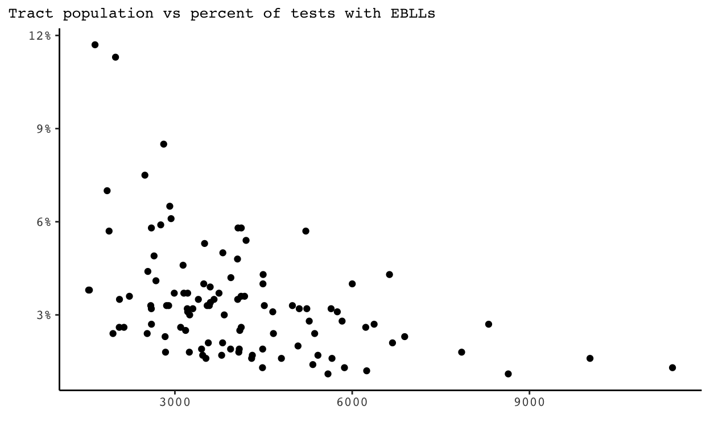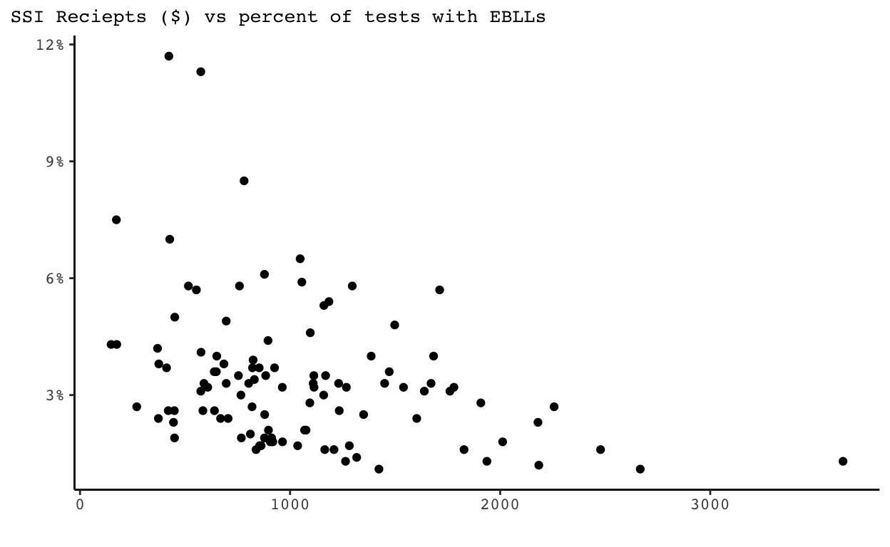
The reasoning for this phenomena could be that such higher populated and impoverished tracts are viewed “higher risk” for lead exposure and have received greater resources to prevent it thus far.
Now that we have our model, we can evaluate it. The model appears solid with a RMSE of about 1.5%, meaning on average our prediction of a tract’s proportion of tests with EBLLs was either too high or too low by about 1.5%. While this is amount of error is relatively small, our model must also have residuals that do not have spatial autocorrelation. As we have discussed, spatial autocorrelation means residuals in one census tract are related to the residuals in the census tracts around it, which is problematic because we violate the assumption of independence of residuals and jeopardize the validity of hypothesis tests. We can test for spatial autocorrelation with something called the Moran’s I test. In order to run the Moran’s I test, we must decide in what way we want to define census tracts as “close”. In other words, we must define a neighborhood structure. There are many options when defining a neighborhood structure. We can define tracts as neighbors if they touch at all, even just at one point such as a corner. This is called the Queen neighborhood structure. Another option is the Rook neighborhood structure, which defines tracts as neighbors if they share an edge (more than just a corner). Neighbors can also be defined using distance. The KNN method calculates the distance between the centers (or centroids) of each census tract, and then defines a neighborhood based on K nearest tracts, distanced based on the centers (Heggeseth 2022). Because we are only looking at census tracts with high lead levels, some tracts do not touch and thus we will use the KNN structure with 4 neighbors. 4 neighbors gives a nice balance between not having too many neighbors (which makes census tracts almost always correlated) and not having too few neighbors, making it harder to pick up on spatial correlation. The KNN(4) structure is shown below.
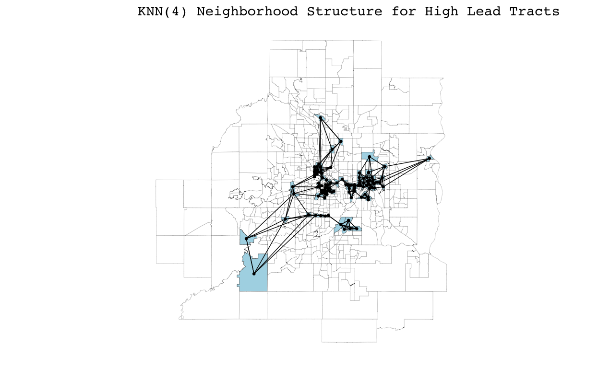
Using the Moran’s I test with the KNN(4) structure shown above, there is very strong evidence to reject our null hypothesis of no spatial correlation between neighboring tracts. We thus conclude that census tracts closer together tend to have similar percentages of tests with EBLLs than census tracts further apart. Given this, we will need to use a model that accounts for this spatial autocorrelation. Two models that can potentially accomplish this are the simultaneous autoregressive model (SAR) and the conditional autoregressive model (CAR). These models are fit in a similar way to an ordinary least squares model as we predict percent of tests with EBLLs using our selected variables, however, we add a component to the model that allows us to use surrounding neighborhood values at varying weights to estimate percentage of tests with EBLLs for each tract. After fitting both a CAR and SAR model using the four variables selected by LASSO and the KNN(4) neighborhood structure, we compared them using BIC and the Moran’s I test. From the Moran’s I test we learned the SAR model yielded strong evidence in support of independent residuals. This evidence was significantly weaker for the CAR model, implying remaining spatial autocorrelation in the residuals. The BIC (a criterion used for model selection) was also superior for the SAR model in comparison to the CAR model, and thus we decided to proceed with the SAR structure. While we tested multiple other SAR models with different combinations of explanatory variables, the model with the four variables selected by LASS0 proved our best model with the lowest average prediction error (about 1.4%).
While the average predictor error of our model is relatively small at 1.4%, one obvious downfall of this model is that it did not predict any census tract to have a percent of tests with EBLLs above 5.6%, as seen below. In reality - as shown in the dotplot earlier in this modeling section - seven tracts had a percent of tests with EBLLs over 6% and two tracts had levels over 10%. Thus, our model does not quite capture as large of a distribution in tract percentages as well as we might have liked.
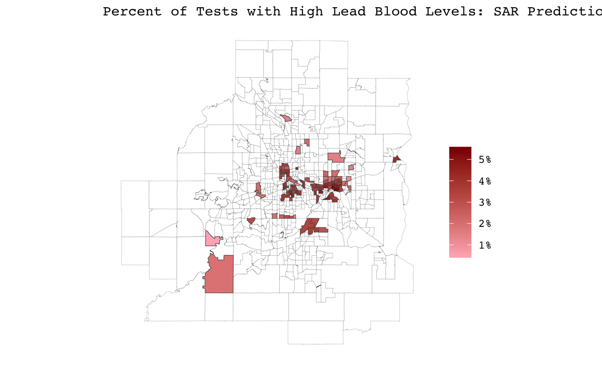
Despite this, our model does indeed do a good job of not systematically over or under-predicting particular areas of the Twin Cities metropolitan area. We see that tracts both inside and outside city limits have a mix of positive and negative residuals and there are several areas where percent of tests with EBLLs are over predicted in one tract and under predicted in its neighboring tract. Given the strong evidence that spatial autocorrelation was accounted for from the Moran’s I test, this is not surprising.
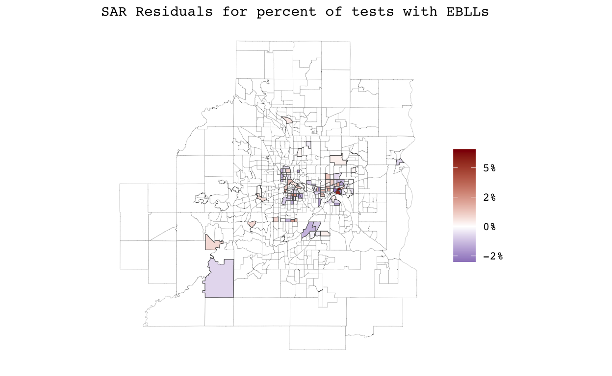
The biggest takeaway from our model is what we can learn about lead exposure patterns using it. Takeaways are generally similar to the LASSO regression model we fit, but we now have more certainty in our coefficient estimates and their significance given we are not breaking the assumption of independent residuals. The two significant coefficients on the \(\alpha=0.05\) level in our model are tract population and the proportion of homes built from 1950 to 1969 in each tract. With regard to population, we estimate for every additional 1000 people residing in a tract that the proportion of tests with EBLLs falls on average 0.4%, holding other variables constant. Given that census tracts are intended to have similar populations (ideally ~4000 people), this might not seem practically significant at first. However, the 106 “high lead” tracts have populations ranging from about 2,000 to over 10,000 people per tract, with the majority falling in the 3000 to 6000 range. Thus, comparing a 6,000 resident to 3,000 resident tract, we’d expect the 6,000 resident tract to have a percent of tests with EBLLs about 1.2% lower than that of the 3,000 resident tract, which is a considerable difference. When looking at our second significant variable, we learn that with every 10% increase in the proportion of homes built between 1950 and 1969 we can expect the percent of tests with EBLLs to decrease about 0.4%, holding other variables constant. This relationship is shown in the graph below on the left and is rather interesting when contrasted to the graph on the right, which displays proportion of homes built before 1950 versus percent of tests with EBLLs for “high lead” tracts. The key takeaway here is that as tracts tend to have more homes built between 1950-1969, their percent of tests with EBLLs tends to fall, while as tracts tend to have more homes built prior to 1950 their percent of tests with EBLLs tends to rise. Given that lead paint was not banned in the United States until 1978, this contrasting relationship is surprising and implies lead paint is not the sole factor causing tracts to have a high percent of tests with EBLLs.
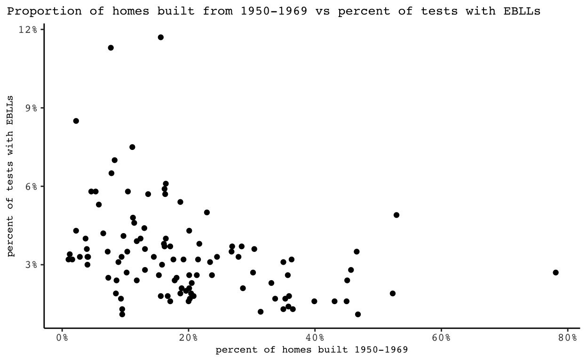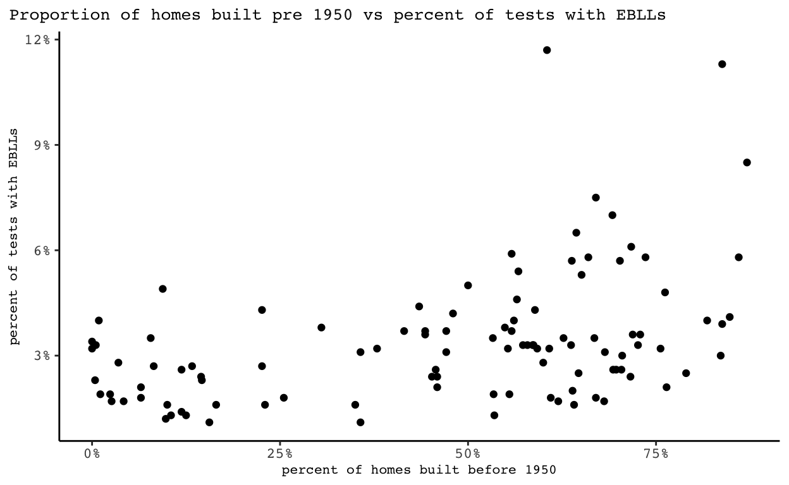
To learn a little more about what might be happening, we created the following graph which shows the remaining home age distribution for high lead tracts based on the proportion of homes built from 1950-1969. We see that tracts with very few homes (less than 20%) built from 1950-1969 are composed on average by over 50% of homes built before 1950. These tracts also have the smallest proportion of homes built from 1970-1989. As the proportion of home built 1950-1969 increases, the proportion of homes built before 1950 in the tract decreases and the proportion of homes built 1970-1989 increases. This implies overall higher average home age and helps to explain why we see that relationship we see in our model.
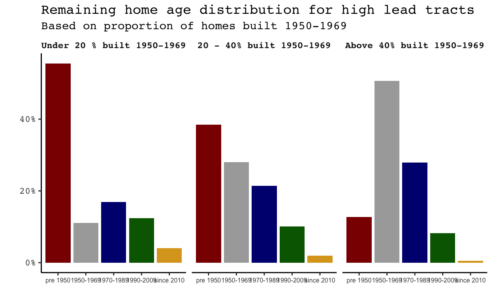
The SSI and proportion of homes built before 1950 variables are both insignificant in this model, though have coefficient directions that make intuitive sense given what we have discussed thus far. Holding other variables constant, as the proportion of homes in a tract built prior to 1950 increases, the percent of tests with EBLLs in that tract increases. Additionally, as discussed when interpreting the LASSO model, tracts receiving more SSI tend to have a lower percentage of tests with EBLLs holding other variables constant.
One of the main limitations in our analysis was data. While we are incredibly thankful to have access to public lead data and demographics on the census tract level, we had been hoping to complete a spatial-temporal analysis looking at the percent of tests with EBLLs in each tract each year dating back to the early 2000s. Unfortunately, the Minnesota Department of Health did not have this data on hand. An additional goal of our was to look at building-specific data available through ArcGIS on lead piping for the St. Paul Regional Water Services (SPRWS) area and incorporate it into our analysis. However, we ran out of time to learn how to web scrape this and so this will be a task for the near future. One other limitation related to the data for this project is that many of the variables we used are estimates. For example, mean tract age is estimated from ACS and census data. Home values come from government valuations which is done for tax purposes. The fact that there is likely a fair amount of error in these estimates should be taken into account when interpreting model coefficients. Also related to the topic of modeling is that fact that no neighborhood structure we choose is going to be perfect. For example, we chose to use the KNN(4) neighborhood structure for our models, which defines four neighbors for every tract using distances between tract centroids. However, it is possible that tracts could be similar in other ways. Tracts close in distance could be incredibly different due to a highway running between them, while tracts further apart but both bordering the river could actually be more similar.
Furthermore, our models will not be the best to predict new data outside of our dataset. If we have a new census tract added, it will be difficult to account for the spatial correlation. The new observation may be farther away in distance that it will become independent and we will not gain the extra predictive ability. However, we can use the distributions from the matern random effect models to attempt in making a prediction for a new area. Unfortunately, we are not able to explain everything.
Throughout our research report, we focused on what seems to be correlated to high lead levels. We anlyzed data from the 7-county Twin Cities metropolitan area using public data provided by the Minnesota Department of Health over the period of 2015-2019 (Health, n.d.). We fit LASSO models to pick out “important” variables and utilize different spatial correlation regressions to obtain accurate standard errors on the coefficients.
Overall, the age of homes in the tract and median income of census tracts seem to be the most important factors when looking at the variation in high lead levels. This is intuitive as old houses, mentioned earlier, tend to have older pipes, more dust, paint chips, all of which have a causal effect leading to high lead levels. Among houses with high lead levels, as tract population increases and proportions of homes built between 1950-1969 increases we see that the percent of tests returning EBLLs decreases holding other variables constant.
Furthermore among census tracts with high lead exposure, there is a specific subgroup of tracts that do not test often (test less than once per child) and have a new home age. This is potentially dangerous as families living in these census tracts may go on about their routine thinking living in a newer household is safe when in reality there may be other factors that contribute to high lead exposure. This is especially concerning as testing rates tend to be lower and the percent of tests with EBLLs are higher in these census tracts. For future research, it will be worthwhile to investigate which census tracts are getting tested more often than others and look into other observable factors that may capture the culture within a census tract with regards to lead levels.
We thank the Minnesota Department of Health and creators of the tidycensus package for providing publicly available data that made our work possible. We also give a big thank you to our professor Brianna Heggeseth for teaching us the mapping and modeling techniques used in this analysis, as well as for providing support and resources throughout this project.